| Name |
Image |
Tier |
Pool |
Description |
Flavor |
| Spell Scribe's Scroll |
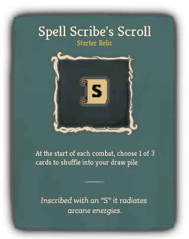 |
Starter |
Scribe_blue |
At the start of each combat, choose 1 of 3 cards to shuffle into your draw pile. |
Inscribed with an "S" it radiates arcane energies. |
| Storm Scale |
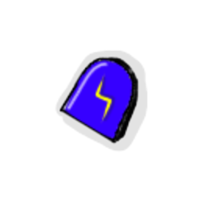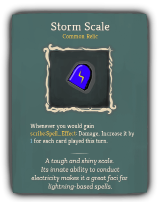 |
Common |
Scribe_blue |
Whenever you would gain scribe:Spell_Effect [REMOVE_SPACE]: Damage, Increase it by 1 for each card played this turn. |
A tough and shiny scale. Its innate ability to conduct electricity makes it a great foci for lightning-based spells. |
| Osmotic Filter |
 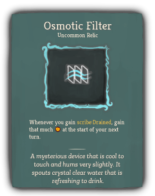 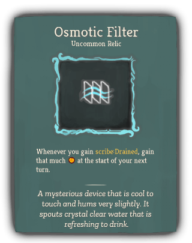 |
Uncommon |
Scribe_blue |
Whenever you gain scribe:Drained [REMOVE_SPACE], gain that much [E] at the start of your next turn. |
A mysterious device that is cool to touch and hums very slightly. It spouts crystal clear water that is refreshing to drink. |
| Permafrost Pen |
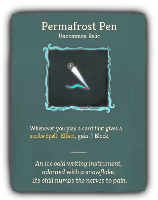 |
Uncommon |
Scribe_blue |
Whenever you play a card that gives a scribe:Spell_Effect [REMOVE_SPACE], gain 3 Block. |
An ice cold writing instrument, adorned with a snowflake. Its chill numbs the nerves to pain. |
| Alchemical Alter |
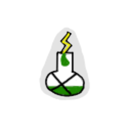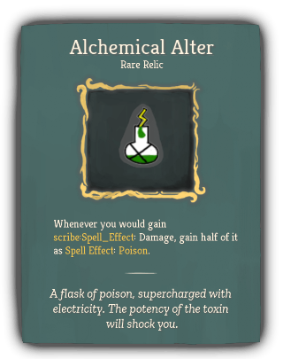 |
Rare |
Scribe_blue |
Whenever you would gain scribe:Spell_Effect [REMOVE_SPACE]: Damage, gain half of it as Spell Effect [REMOVE_SPACE]: Poison [REMOVE_SPACE]. |
A flask of poison, supercharged with electricity. The potency of the toxin will shock you. |
| Runic Repeater |
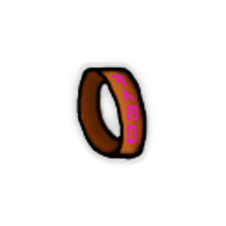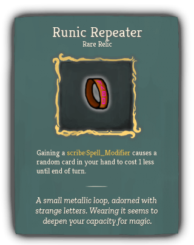 |
Rare |
Scribe_blue |
Gaining a scribe:Spell_Modifier causes a random card in your hand to cost 1 less until end of turn. |
A small metallic loop, adorned with strange letters. Wearing it seems to deepen your capacity for magic. |
| Invisible Inkwell |
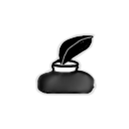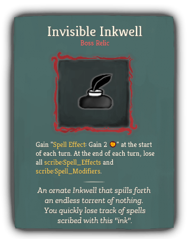 |
Boss |
Scribe_blue |
Gain " [REMOVE_SPACE]#ySpell Effect [REMOVE_SPACE]: Gain 2 [E] [REMOVE_SPACE]" at the start of each turn. At the end of each turn, lose all scribe:Spell_Effects and scribe:Spell_Modifiers [REMOVE_SPACE]. |
An ornate Inkwell that spills forth an endless torrent of nothing. You quickly lose track of spells scribed with this "ink". |
| Meditation Circle |
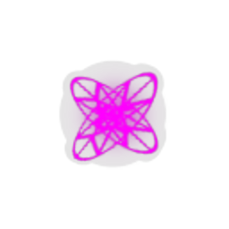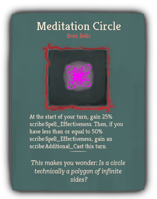 |
Boss |
Scribe_blue |
At the start of your turn, gain 25% scribe:Spell_Effectiveness. Then, if you have less than or equal to 50% scribe:Spell_Effectiveness, gain an scribe:Additional_Cast this turn. |
This makes you wonder: Is a circle technically a polygon of infinite sides? |
{kind=link}
{kind=link}
{kind=link}
{kind=link}
{kind=link}
{kind=link}
{kind=link}
{kind=link}